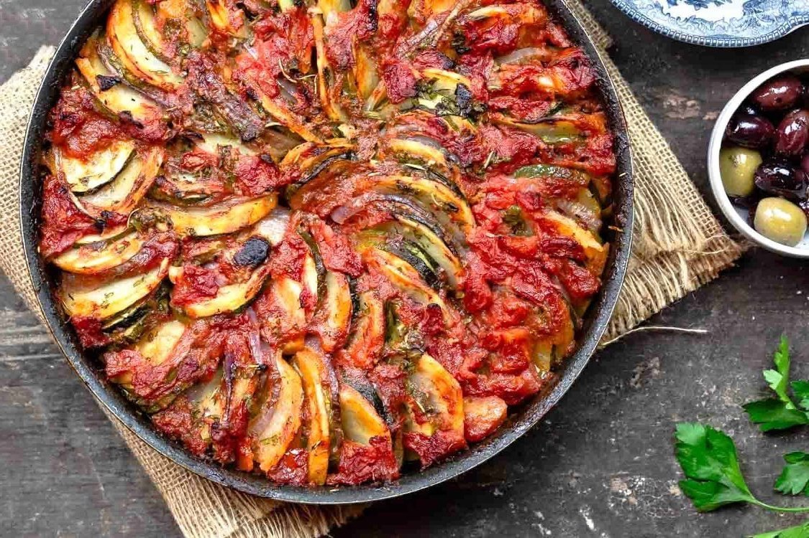

Briam is an amazing vegetable and olive oil based dish in the ladera family. Ladera (lathera) is a Greek word meaning “in oil”. These foods are usually vegetable or bean-based dishes that are cooked in copious amounts of extra virgin olive oil. Briam is basically all of the summer vegetables from your garden like peppers, zucchini, eggplant, tomato, and some potatoes all cooked in a lot of fresh and dried herbs, onion, garlic, and a ridiculous amount of extra virgin olive oil.